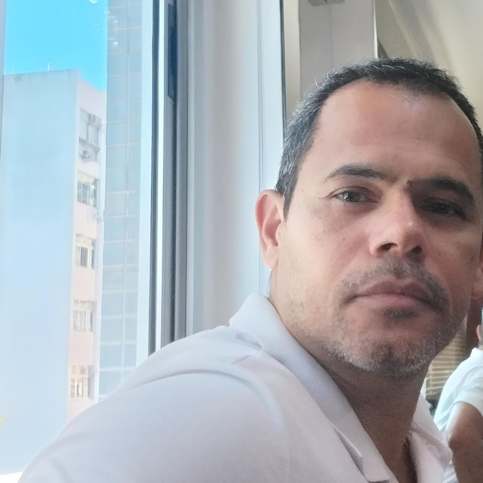
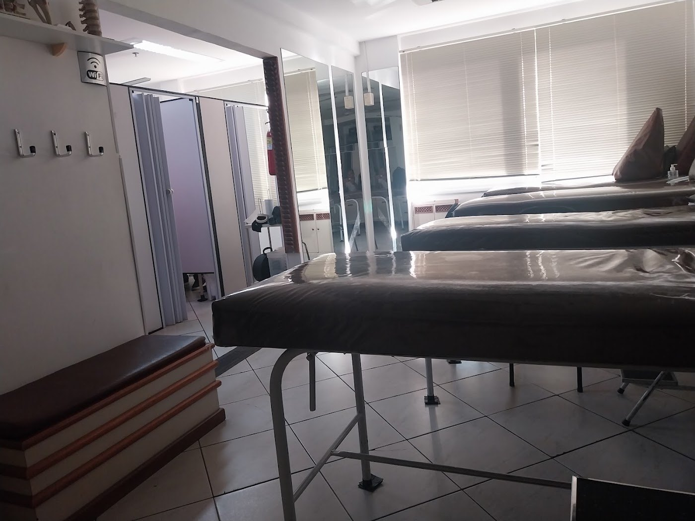
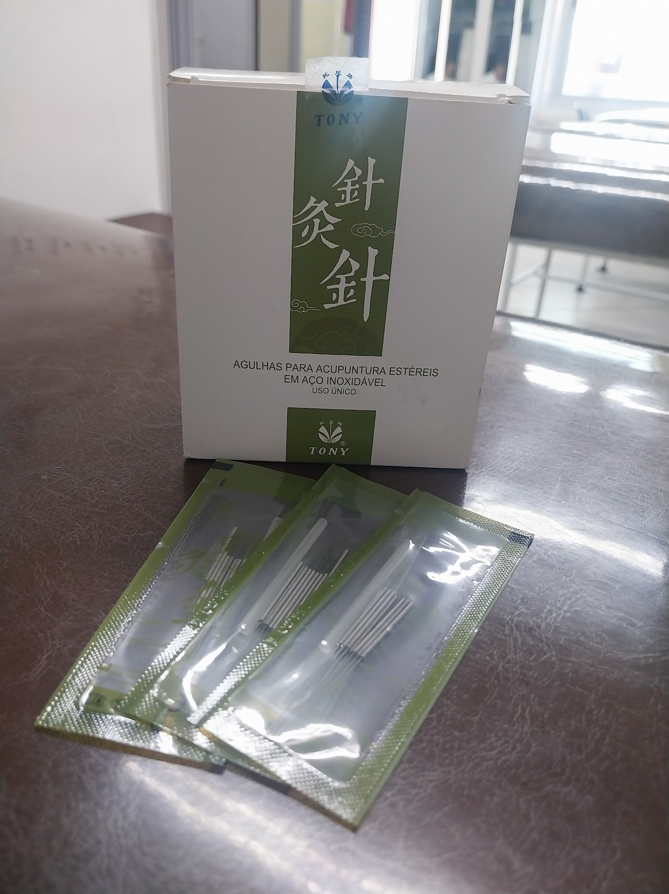
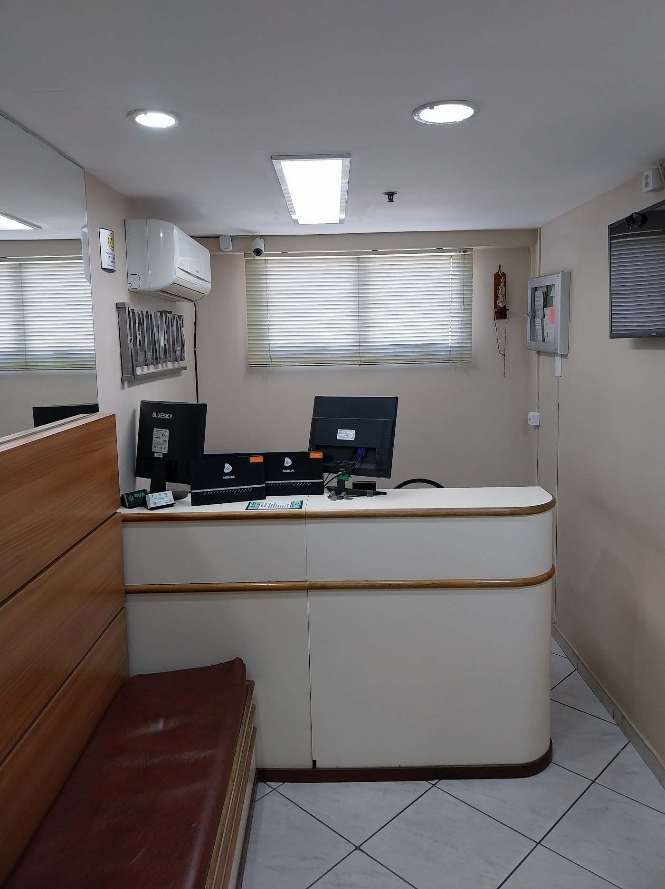
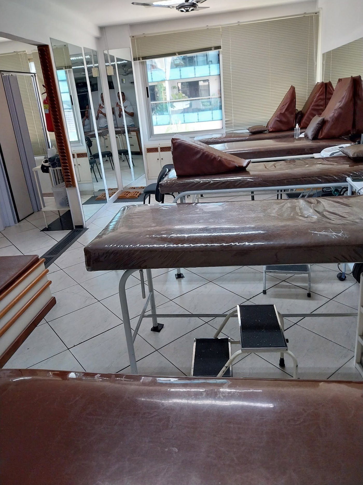
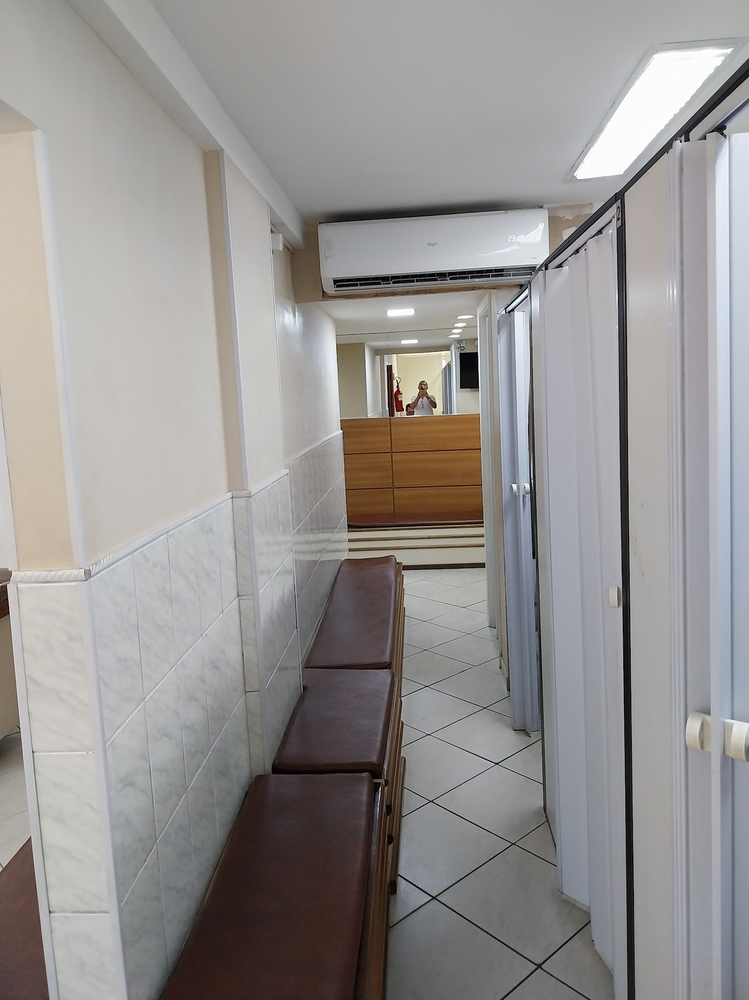
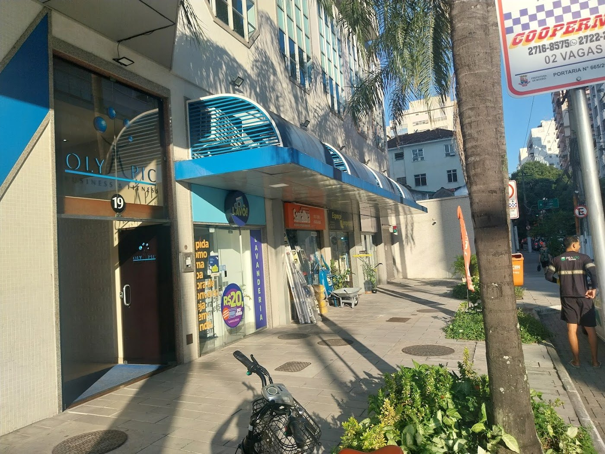

Fisioterapia, RPG e acupuntura com Marco Oliveira, em Icaraí. Terapia manual, com as mãos, e um acompanhamento comprometido com a sua melhora.

Técnicas para aliviar dores na coluna, no ombro e na cervical, corrigir a postura e recuperar o movimento.
Reeducação Postural Global, especialidade do Marco: alongamentos e posturas que trabalham o corpo como um todo para tratar dores e corrigir a postura.
Aplicação de agulhas em pontos específicos do corpo, aliada à fisioterapia no tratamento de dores crônicas e na coluna.
Liberação miofascial instrumental: uma técnica que usa instrumentos específicos para liberar a musculatura e aliviar dores.
Terapia manual e liberação miofascial para reabilitação, prevenção de lesões e recuperação após cirurgias.



O Marco é fisioterapeuta especializado em RPG e trabalha também com acupuntura e crochetagem. No consultório, o tratamento é feito com as mãos: terapia manual e manobras pensadas para cada paciente, e não apenas aparelhos.
Manobras e terapia manual feitas pelo próprio Marco em cada sessão.
RPG e acupuntura para tratar a causa da dor, não só o sintoma.
Formação voltada também para a saúde e o condicionamento da terceira idade.
Na Rua Men de Sá, 19, sala 401, em Icaraí, Niterói.



“Competente, comprometido com o paciente. Não é profissional de usar somente máquina. Profissional que usa as mãos para fazer manobras no paciente. Meu pós-operatório com ele foi perfeito. Só gratidão ao Marco.”
Clessia Regina Santos Costa“Trabalho excelente! Tem me ajudado demais com as dores no ombro e cervical. O alívio é imediato após as sessões.”
Larissa Quintanilha“Excelente fisioterapeuta. Faço RPG. Os ossos e músculos esmerilhados, como ele diz brincando, que Marquinho estica, massageia e desmerilha. Recomendo este profissional de 1ª.”
Sandra Martins“Excelente profissional. Trabalho sério e competente. Valeu o tratamento, tive melhoras significativas. Muito bom.”
Márcia Vianna“Um excelente profissional e muito competente, ama o que faz.”
Cristiana Carvalho“Um profissional de excelência qualidade, super indico.”
Janaina Fonseca